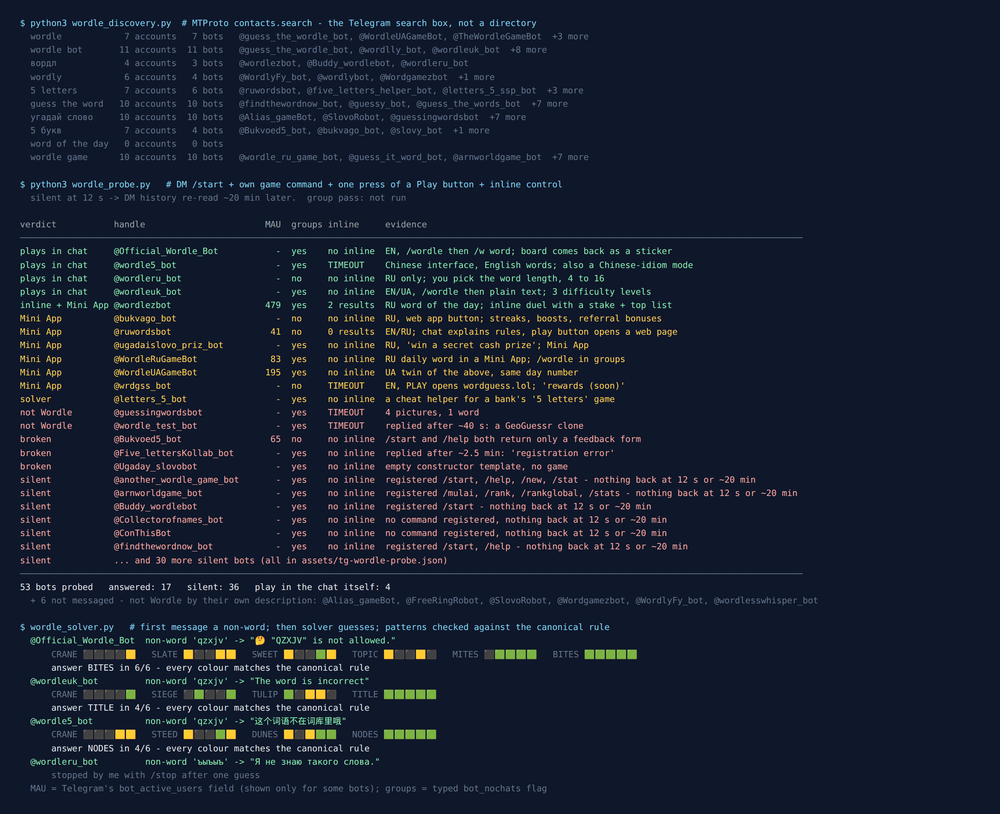

Wordle on Telegram: 59 Bots Found, 4 Play in the Chat
Wordle needs almost nothing. One hidden five-letter word, six tries, and coloured tiles after each guess. Wikipedia puts it in one sentence: “players have six attempts to guess a five-letter word, receiving feedback through coloured tiles that indicate correct letters and their placement”. Josh Wardle built it, the New York Times bought it in January 2022, and it is still free to play on the NYT site, one puzzle a day.
A game that small should be easy to put in a Telegram bot, and lots of people have tried. So on the evening of 8 October 2026 I asked Telegram’s own search for every Wordle bot it knew about, messaged each one, and played full games against the ones that ran in the chat. 59 bot accounts came back. 6 were plainly something else, so I never messaged them. Of the 53 I did message, 36 never answered at all. 17 did, and only 4 of those let me play Wordle by typing words into the chat.
The 4 that play turned out to be better than I expected. Each one turned down a word that doesn’t exist, and the three I finished games on coloured every tile exactly the way the official rules say, including the tricky case of a repeated letter, which is where home-made Wordle clones usually slip.

How the list was built
The list came from the platform, not from a bot directory. Telegram’s search box is an API method called contacts.search, and it only returns accounts that exist right now. A directory listing can outlive its bot by years. This is the same method I used for the word game census (Crocodile, charades, hangman), so the two lists can be compared.
I fixed ten queries before measuring anything: wordle, wordle bot, wordle game, the Russian spelling вордл, the common misspelling wordly, and the plain names people give the game: 5 letters, guess the word, угадай слово and 5 букв (both Russian for “guess the word” and “5 letters”), and word of the day. That last one found nothing at all. The other nine found 59 different bots between them.
I left 6 alone because their own descriptions said what they were, and none of them was Wordle: an Alias party game, a speed word quiz, an anagram bot, an AI language tutor, an “emotional support” chat and a “press /start to get a free ring” giveaway. Every other bot got the same treatment: /start in a private chat, the bot’s own game command if it had registered one (/wordle, /play, /new), one press of a Play button if it showed me one, and an inline query, which Telegram passes to the bot’s server.
A bot that said nothing within twelve seconds got a second look about twenty minutes later: I read back the whole private chat to see if anything had arrived late. Two bots had. One replied after about 40 seconds, the other after about two and a half minutes. Everything else that was quiet at twelve seconds was still quiet.
Two out of three Wordle bots are switched off
36 of the 53 bots I messaged never answered. That includes some promising names: @guess_the_wordle_bot (top result for the plain query “wordle”), @Wordle_bot with a full set of commands registered (/daily, /hint, /duel, /share), and @TheWordleGameBot. That last one shows 502 monthly users on its profile, the most of any bot I messaged, and its description is a perfect summary of Wordle. It didn’t answer /start, didn’t answer /help, and its inline mode timed out. The monthly user count is a number Telegram shows, so somebody was using it in the last month. It was not running on 8 October.
Three more answered but were broken. @Five_lettersKollab_bot took two and a half minutes to say “Произошла ошибка при регистрации” (“an error occurred during registration”). @Ugaday_slovobot is an empty template from a bot builder: two messages about the builder, no game. @Bukvoed5_bot answers /start and /help with the same feedback form and nothing else.
Two were not Wordle at all once they spoke: @guessingwordsbot is “4 pictures, 1 word”, and @wordle_test_bot, despite the name, welcomed me to “Telegram GeoGuessr”. And @letters_5_bot is a solver: it helps you cheat at a “5 letters” game run by a Russian bank, where, in its own words, “you can even win some prizes”.
Most working Wordle bots open a Mini App
7 of the bots that worked don’t play in the chat at all. They show a button, and the button opens a Mini App, a web page that Telegram loads inside itself. Telegram’s documentation is upfront that Mini Apps “can be launched right inside Telegram — and can completely replace any website”. For Wordle that makes sense: a grid of tiles and an on-screen keyboard is easier to draw on a web page than in chat messages.
@WordleRuGameBotand@WordleUAGameBotare the same game in Russian and Ukrainian, from the same developer (both send feedback to@MamoruFeedbackBot). Both were on puzzle #646 that night. They have 83 and 195 monthly users, and both say you can use/wordlein a group to challenge everyone in it.@wordlezbot(479 monthly users) is a Russian word of the day, the same word for everyone, new at midnight Moscow time. It has the most interesting inline mode in the list: type its name in any chat and you get “challenge to a duel” with a stake, or a top list where the leaders average between 3.3 and 4.2 guesses.@bukvago_botis Russian Wordle with streaks, boosts, hints, a rating and “bonuses for inviting friends”.@wrdgss_bot(“Word Guess”) is the English one: a PLAY button that opens wordguess.lol, plus “rewards (soon)”.@ruwordsbotexplains the rules in 13 chat messages, asks you to pick English or Russian, and then hands you a button to a web page anyway.@ugadaislovo_priz_botpromises a “secret cash prize”. I didn’t open it. A word game that pays cash is a different kind of product, and I would treat it the way I treat any bot that talks about money first.
I tested the chat, not the web pages. Mini Apps run on someone else’s website, so what the button opens can change any time without the bot changing at all. If you want Wordle inside Telegram and don’t mind a web page, the Mamoru pair look the best maintained: a puzzle number that moves every day, and a group command.
The 4 that play in the chat: three full games
Four bots let me play by typing guesses into the chat: @Official_Wordle_Bot, @wordleuk_bot, @wordle5_bot and @wordleru_bot. The last one is Russian only and has a nice twist: it asks how long the word should be, anything from 4 to 16 letters. I checked it turned down a nonsense word and stopped there. The other three take English words, and I played each one to the end.
The plan was fixed before the first game. First message: qzxjv, which is not a word, to see if the bot checks its dictionary. Then real guesses, picked by a small solver script from a standard English word list, with no human hunches. And at some point in each game, one guess with a repeated letter, on purpose.
The repeated letter is the real test. It is the one rule people get wrong when they write their own Wordle. Wikipedia spells it out: if a guess has the same letter twice, “those letters will be marked green or yellow only if the answer also contains them multiple times. If not, extra occurrences will be marked gray”. A lazy clone checks each tile on its own and paints both copies yellow, which tells you the letter appears twice when it doesn’t.
Here is what happened:
@Official_Wordle_Bot: “🤔 "QZXJV" is not allowed.” Then CRANE, SLATE, SWEET, TOPIC, MITES, BITES: solved on the sixth and last guess, after MITES left me a coin toss between BITES and KITES. In SWEET, the answer had one E, in fourth place. The bot made that E green and the other E grey. Correct. You play with/w word, and the board comes back as a sticker with a keyboard sticker under it. Despite the name, its own description says “Unofficial Wordle bot following Official rules and words”, and it links to its source code.@wordleuk_bot: “The word is incorrect”, and it didn’t count as a guess. Then CRANE, SIEGE, TULIP, TITLE: solved in four. SIEGE against TITLE is the same test from the other side: one E green at the end, the middle E grey. Correct again. It plays in English or Ukrainian and has three difficulty levels in/settings. When you win, it posts the emoji grid you can share.@wordle5_bot: “这个词语不在词库里哦”, Chinese for “this word isn’t in the word list”. The interface is Chinese and the words are English. CRANE, STEED, DUNES, NODES: solved in four. STEED against NODES: E4 green, E3 grey. Correct. It also has a separate Chinese mode (/handle), and when I won it asked, in Chinese, what “nodes” are and whether they taste good.
That is fourteen guesses across three bots, and I checked every tile against the official rule with a script. All fourteen matched. None of the three let a made-up word through, and none of them charged me a turn for trying.
Three games are not a full audit. In every one of my test guesses the answer had the letter once, so I tested “extra copy goes grey” and not the reverse case, where the answer has the letter twice. But this is the bug that shows up first, and none of them had it.
Wordle done in four? Bring the group in
Wordle is a solo game you compare afterwards. The free Party Game is for when everyone plays at once: Truth or Dare, Never Have I Ever and Would You Rather, running inside Telegram, with nothing to add to your group and nothing reading the chat.
Open the Party Game No Telegram? It runs in a browser too: charliemorrison.dev/party-gameWhich ones work in a group
Telegram puts a flag on every bot account that says whether it can be added to groups at all. 5 of the 17 bots that answered have it switched off, including @wordleru_bot, @bukvago_bot, @wrdgss_bot and @ruwordsbot. They are private-chat only, whatever else they do.
For a group, the candidates are the ones that say so themselves: @Official_Wordle_Bot has a multiplayer section in its help, @wordleuk_bot offers “CoWordle” through inline mode, the Mamoru pair use /wordle in a group, and @wordlezbot has duels. I couldn’t check any of that in a real group (see below), so treat it as the bots’ own description.
How to play Wordle in a group chat without a bot
Wordle went viral in late 2021 because of one thing: the grid of coloured squares you could paste anywhere without spoiling the answer. You can still run a group on that alone.
- Everyone plays the same daily puzzle on the NYT site, which gives the whole world one word a day, and pastes the share grid into the chat. No bot, no setup. Agree on a rule for spoilers, like no letters in messages until everyone has posted a grid.
- Or one person hosts. The host picks a five-letter word and writes it in their own Saved Messages first, so nobody can accuse them of changing it. Players post guesses. The host replies to each guess with five squares: 🟩 right letter, right place; 🟨 in the word but somewhere else; ⬛ not in the word.
- Do repeated letters the official way. Mark the greens first. Then go left to right and give out yellows only for copies the answer still has left. Every extra copy is ⬛. This is the one rule worth writing in the group description before you start.
- Six guesses for the whole group, or six each, if you want a race. With six people taking one guess each, a round takes a couple of minutes.
For other word games that work this way, the word game census covers Crocodile and hangman, and the game night guide puts several of them into one evening.
When the group wants more than word puzzles
Wordle covers ten minutes. The Telegram Party Pack is for the rest of the night: 110 Truth or Dare, 45 Never Have I Ever, 30 Would You Rather, 30 Most Likely To, 25 Paranoia and 15 Story Chain prompts, as copy-paste text and ready-made poll blocks, with a host guide. 255 in total, nothing that needs a bot.
Get the pack — $9.99 Or see the party games list for what holds up in a bigger group.What I could not test
No group pass. Everything here comes from private chats, inline queries, each bot’s own text and buttons, and the flags on its account. The account I test from can’t create groups, and I don’t borrow strangers’ groups to test bots in. So every “works in groups” above is the bot’s own claim.
No Mini Apps. I recorded what each button opens, not how the web page plays. Those pages can change without the bot changing.
One game per bot. Three games show that the colouring is right in the common case. They don’t show how big each bot’s word list is, or whether the daily word is really the same for everyone.
Silent is not dead for good. In other censuses on this site, bots came back from silence within a few weeks, and others went quiet. The date at the top of this page matters more than the list.
If you want to play tonight
- English Wordle in the chat:
@wordleuk_bot, then/wordleand type your guesses.@Official_Wordle_Botis the backup; remember the/wbefore each word. - Russian or Ukrainian, daily:
@WordleRuGameBotor@WordleUAGameBot(a Mini App). Want to choose the word length?@wordleru_bot. - A whole group: everyone pastes their NYT grid, or one person hosts with emoji squares, as above.
- Avoid: any word game that leads with a cash prize, a deposit or referral bonuses.
- More games: the free Party Game, or Telegram games for two if it’s just the two of you.